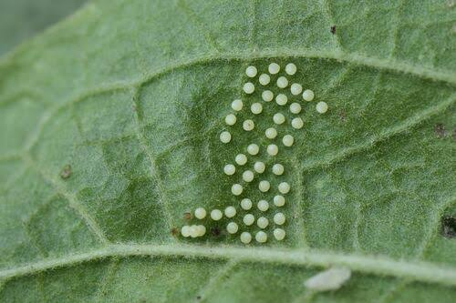
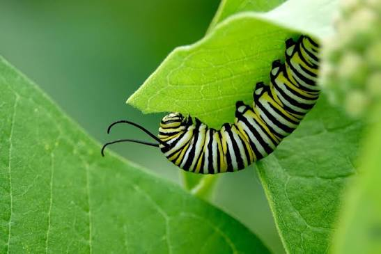
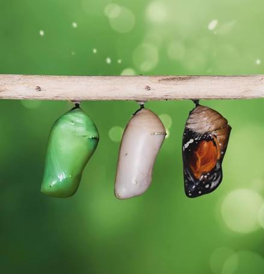
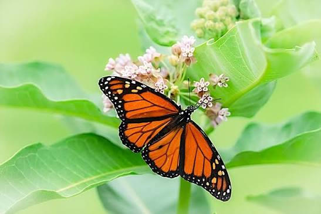

1. Egg The Beginning
The life cycle begins when an adult female butterfly lays tiny eggs, usually on the leaves of plants. After some time, a tiny caterpillar comes out of the egg.
Remember: A butterfly starts its life as an egg.
Discover the four amazing stages of a butterfly's life!
At the end of the lesson, learners should be able to:
A life cycle is the series of changes a living thing goes through as it grows and develops. A butterfly has four stages: egg, larva (caterpillar), pupa (chrysalis), and adult butterfly. This process is called complete metamorphosis.

The life cycle begins when an adult female butterfly lays tiny eggs, usually on the leaves of plants. After some time, a tiny caterpillar comes out of the egg.
Remember: A butterfly starts its life as an egg.
After hatching, the young butterfly is called a larva or caterpillar. It eats leaves to grow and sheds its old skin several times.
Remember: The caterpillar's main job is to eat and grow.
When the caterpillar is ready, it forms a protective covering called a chrysalis. Inside, its body changes as it develops into a butterfly.
Remember: The pupa is the stage when the big change happens.
A fully developed butterfly comes out of the chrysalis. Its wings expand and dry before it flies. Adult butterflies visit flowers for nectar and can reproduce, beginning the life cycle again.
Remember: The adult butterfly can lay eggs and start a new life cycle.Butterflies can often be seen in gardens, parks, and fields where flowering plants grow. They visit flowers to drink nectar. We can observe them without touching or disturbing them.